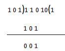

Let us take A = 11010 and B = 101
We want to divide A by B
The structure of operation of binary division is similar to that of decimal division, now we will look into the operation step by step to make it understanding as much as possible.
In the first step the left most digits of dividend i.e. A are considered and depending upon the value the divisor is multiplied with 1 and the result which is the result of multiplication of 101 and 1 are written. As we already know that 1 * 1 = 1, 1 * 0 = 0 and 1 * 1 = 1 that is exactly what is written.

In this step 101 is subtracted from 110. This step is also very easy to understand as we already know binary subtraction method. Now going into the next step.
As of the rules of division the next least significant bit comes down and we try to multiply 1 with divider i.e. B but the result is bigger than the minuend so this step cannot be completed and we have to go to the next step.
0 is inserted into the quotient and the least significant bit comes down now we can proceed to the next step.
Now again the divisor is multiplied with 1 and the result is written, the result is similar to the first one because all the numbers are same. Now we are going into the final step.
In the final step binary subtraction is done and we get the remainder and the operation of binary division is completed and we get the following result.
Quotient = 101 and remainder = 1.
 by
by